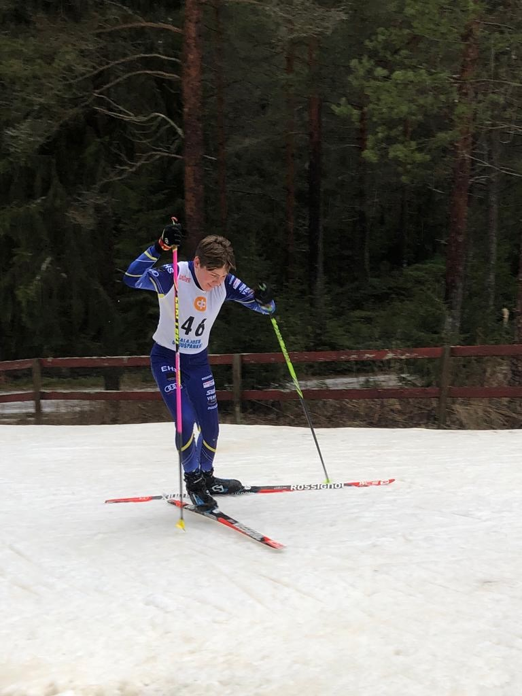
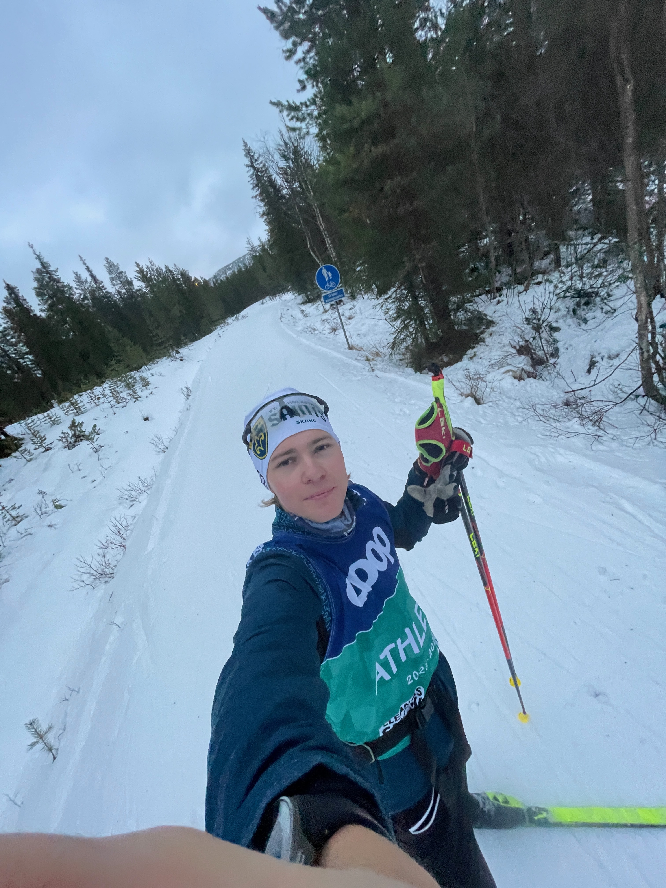

LEEVI
PERIKSIANTAMATON · KUNNIOITTAVA · INSPIROIVA · YSTÄVÄLLINEN

Ensimmäisiä kilpailuja – ja monta sijaa listan hännillä.
Ryhmän viimeisestä maailmancupiin
Olen Leevi Tarjanne, 21-vuotias hiihtäjä Espoosta. Aloitin kilpahiihdon ”vasta” 14-vuotiaana – ja ensimmäiset vuodet olin aina ryhmän ja kilpailujen viimeinen, häviten usein myös kaikille tytöille.
En kuitenkaan ikinä luovuttanut. Halusin kehittyä jatkuvasti ja olla aina huomenna parempi kuin eilen. Tämä mentaliteetti on säilynyt kaikki nämä vuodet ja jatkuu edelleen.
Suomen edustaminen hiihdon maailmancupissa tuntui itsellekin vielä pari vuotta sitten utopialta. Tänä päivänä se on todellisuutta. Haluan tarinallani rohkaista jokaista, joka tekee paljon töitä ja tsemppaa, mutta silti kamppailee tuloslistojen häntäpäässä. Jatka taistelua ja luota siihen, että uskolla omaan tekemiseen ja kovalla työllä mikä tahansa on mahdollista!
”Kova työ palkitaan aina, tavalla tai toisella.”

Tuhansia tunteja harjoittelua – joka sää, joka päivä.
Läpimurto Suomen kärkeen
Kauden 2025–2026 tulen muistamaan läpimurtokautenani Suomen maastohiihdon kärkeen. Kolme maailmancup-starttia, aikuisten SM-kisojen top 10 ja kansainvälinen huippuhiihto Oloksen tykkikisoissa osoittavat, että kuulun Suomen kärkihiihtäjiin vain 21-vuotiaana.
Tiedostan, että kansainväliseen kärkeen murtautuminen vaatii tuhansia tunteja harjoittelua ja täydellistä sitoutumista. Olen valmis siihen kaikkeen – ja tiedän, että pystyn siihen. Minulla on hiihtäjänä monta osa-aluetta, joissa voin kehittyä vielä paljon. Juuri se antaa paloa harjoitella entistäkin paremmin.
Kesä 2026: korkeanpaikanleiri
Tulevalla kesäharjoituskaudella otan harjoitusohjelmaani mukaan korkeanpaikanharjoittelun. Pitkät nousut rullahiihtäen ja jalkalenkeillä sekä ohut ilmanala tuovat keholle uusia ärsykkeitä matkalla kohti kansainvälistä kärkeä. Leirityksen toteuttaminen vaatii kuitenkin ulkopuolista rahoitusta.
LÄHDE KUMPPANIKSI